写在前面的话：距离上篇博客竟过去快一个月了，写完神经网络博客正式进入考试模式，几次考试+几篇报告下来弄得心颇不宁静了，今日定下来看到一句鸡血：Tomorrow is another due！也许生活就需要一些deadline~~
上篇主要介绍了神经网络。首先从生物学神经元出发，引出了它的数学抽象模型--MP神经元以及由两层神经元组成的感知机模型，并基于梯度下降的方法描述了感知机模型的权值调整规则。由于简单的感知机不能处理线性不可分的情形，因此接着引入了含隐层的前馈型神经网络，BP神经网络则是其中最为成功的一种学习方法，它使用误差逆传播的方法来逐层调节连接权。最后简单介绍了局部/全局最小以及目前十分火热的深度学习的概念。本篇围绕的核心则是曾经一度取代过神经网络的另一种监督学习算法--支持向量机（Support Vector Machine），简称SVM。
6、支持向量机
支持向量机是一种经典的二分类模型，基本模型定义为特征空间中最大间隔的线性分类器，其学习的优化目标便是间隔最大化，因此支持向量机本身可以转化为一个凸二次规划求解的问题。
6.1 函数间隔与几何间隔
对于二分类学习，假设现在的数据是线性可分的，这时分类学习最基本的想法就是找到一个合适的超平面，该超平面能够将不同类别的样本分开，类似二维平面使用ax+by+c=0来表示，超平面实际上表示的就是高维的平面，如下图所示：
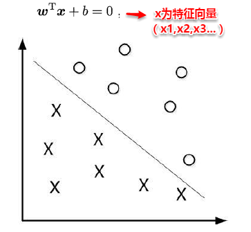
对数据点进行划分时，易知：当超平面距离与它最近的数据点的间隔越大，分类的鲁棒性越好，即当新的数据点加入时，超平面对这些点的适应性最强，出错的可能性最小。因此需要让所选择的超平面能够最大化这个间隔Gap（如下图所示）， 常用的间隔定义有两种，一种称之为函数间隔，一种为几何间隔，下面将分别介绍这两种间隔，并对SVM为什么会选用几何间隔做了一些阐述。
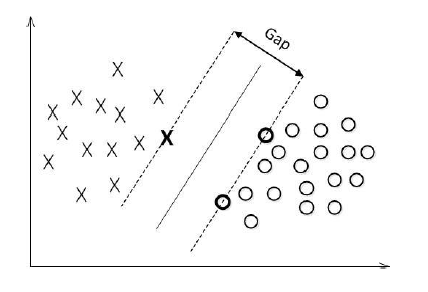
6.1.1 函数间隔
在超平面w'x+b=0确定的情况下，|w'x+b|能够代表点x距离超平面的远近，易知：当w'x+b>0时，表示x在超平面的一侧（正类，类标为1），而当w'x+b<0时，则表示x在超平面的另外一侧（负类，类别为-1），因此（w'x+b）y 的正负性恰能表示数据点x是否被分类正确。于是便引出了函数间隔*的定义（functional margin）:
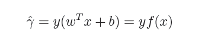
而超平面（w,b）关于所有样本点（Xi，Yi）的函数间隔最小值则为超平面在训练数据集T上的函数间隔：
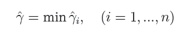
可以看出：这样定义的函数间隔在处理SVM上会有问题，当超平面的两个参数w和b同比例改变时，函数间隔也会跟着改变，但是实际上超平面还是原来的超平面，并没有变化。例如：w1x1+w2x2+w3x3+b=0其实等价于2w1x1+2w2x2+2w3x3+2b=0，但计算的函数间隔却翻了一倍。从而引出了能真正度量点到超平面距离的概念--几何间隔（geometrical margin）。
6.1.2 几何间隔
几何间隔代表的则是数据点到超平面的真实距离，对于超平面w'x+b=0，w代表的是该超平面的法向量，设x为超平面外一点x在法向量w方向上的投影点，x与超平面的距离为r，则有x=x-r(w/||w||)，又x在超平面上，即w'x+b=0，代入即可得：
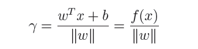
为了得到r的绝对值，令r呈上其对应的类别y，即可得到几何间隔的定义：
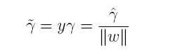
从上述函数间隔与几何间隔的定义可以看出：实质上函数间隔就是|w'x+b|，而几何间隔就是点到超平面的距离。
6.2 最大间隔与支持向量
通过前面的分析可知：函数间隔不适合用来最大化间隔，因此这里我们要找的最大间隔指的是几何间隔，于是最大间隔分类器的目标函数定义为：
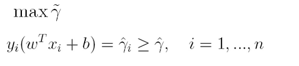
一般地，我们令r^为1（这样做的目的是为了方便推导和目标函数的优化），从而上述目标函数转化为：
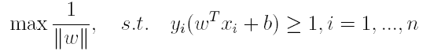
对于y(w'x+b)=1的数据点，即下图中位于w'x+b=1或w'x+b=-1上的数据点，我们称之为支持向量（support vector），易知：对于所有的支持向量，它们恰好满足y(w'x+b)=1，而所有不是支持向量的点，有y(w'x+b)>1。
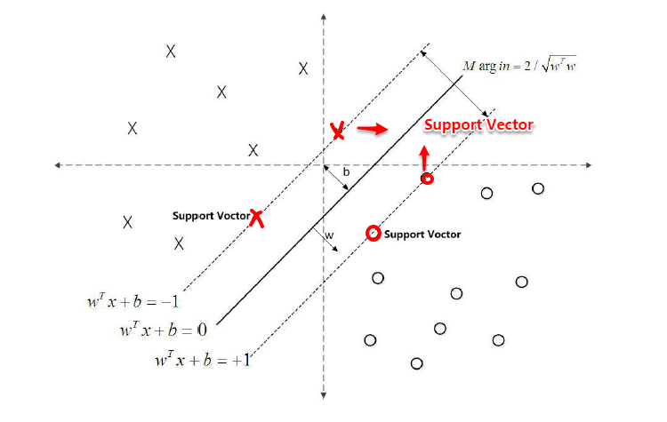
6.3 从原始优化问题到对偶问题
对于上述得到的目标函数，求1/||w||的最大值相当于求||w||^2的最小值，因此很容易将原来的目标函数转化为：
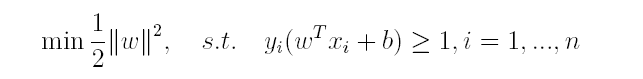
即变为了一个带约束的凸二次规划问题，按书上所说可以使用现成的优化计算包（QP优化包）求解，但由于SVM的特殊性，一般我们将原问题变换为它的对偶问题，接着再对其对偶问题进行求解。为什么通过对偶问题进行求解，有下面两个原因：
* 一是因为使用对偶问题更容易求解；
* 二是因为通过对偶问题求解出现了向量内积的形式，从而能更加自然地引出核函数。
对偶问题，顾名思义，可以理解成优化等价的问题，更一般地，是将一个原始目标函数的最小化转化为它的对偶函数最大化的问题。对于当前的优化问题，首先我们写出它的朗格朗日函数：
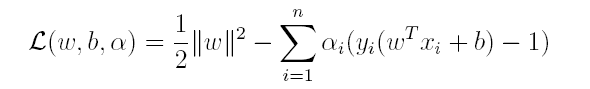
上式很容易验证：当其中有一个约束条件不满足时，L的最大值为 ∞（只需令其对应的α为 ∞即可）；当所有约束条件都满足时，L的最大值为1/2||w||^2（此时令所有的α为0），因此实际上原问题等价于：
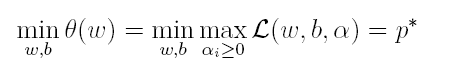
由于这个的求解问题不好做，因此一般我们将最小和最大的位置交换一下（需满足KKT条件） ，变成原问题的对偶问题：
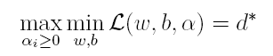
这样就将原问题的求最小变成了对偶问题求最大（用对偶这个词还是很形象），接下来便可以先求L对w和b的极小，再求L对α的极大。
（1）首先求L对w和b的极小，分别求L关于w和b的偏导，可以得出：
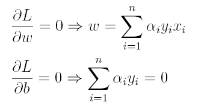
将上述结果代入L得到：
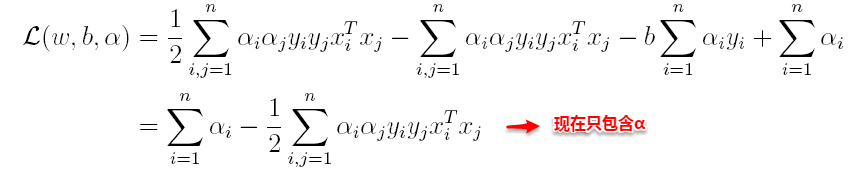
（2）接着L关于α极大求解α（通过SMO算法求解，此处不做深入）。

（3）最后便可以根据求解出的α，计算出w和b，从而得到分类超平面函数。
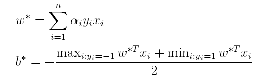
在对新的点进行预测时，实际上就是将数据点x*代入分类函数f(x)=w'x+b中，若f(x)>0，则为正类，f(x)<0，则为负类，根据前面推导得出的w与b，分类函数如下所示，此时便出现了上面所提到的内积形式。
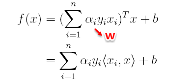
这里实际上只需计算新样本与支持向量的内积，因为对于非支持向量的数据点，其对应的拉格朗日乘子一定为0，根据最优化理论（K-T条件），对于不等式约束y(w'x+b)-1≥0，满足：
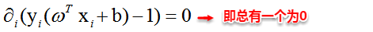
6.4 核函数
由于上述的超平面只能解决线性可分的问题，对于线性不可分的问题，例如：异或问题，我们需要使用核函数将其进行推广。一般地，解决线性不可分问题时，常常采用映射的方式，将低维原始空间映射到高维特征空间，使得数据集在高维空间中变得线性可分，从而再使用线性学习器分类。如果原始空间为有限维，即属性数有限，那么总是存在一个高维特征空间使得样本线性可分。若∅代表一个映射，则在特征空间中的划分函数变为：
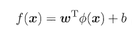
按照同样的方法，先写出新目标函数的拉格朗日函数，接着写出其对偶问题，求L关于w和b的极大，最后运用SOM求解α。可以得出：
（1）原对偶问题变为：
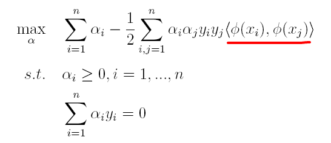
（2）原分类函数变为： 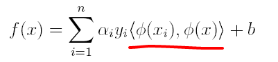
求解的过程中，只涉及到了高维特征空间中的内积运算，由于特征空间的维数可能会非常大，例如：若原始空间为二维，映射后的特征空间为5维，若原始空间为三维，映射后的特征空间将是19维，之后甚至可能出现无穷维，根本无法进行内积运算了，此时便引出了核函数（Kernel）的概念。
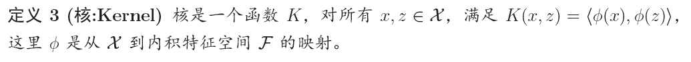
因此，核函数可以直接计算隐式映射到高维特征空间后的向量内积，而不需要显式地写出映射后的结果，它虽然完成了将特征从低维到高维的转换，但最终却是在低维空间中完成向量内积计算，与高维特征空间中的计算等效（低维计算，高维表现），从而避免了直接在高维空间无法计算的问题。引入核函数后，原来的对偶问题与分类函数则变为：
（1）对偶问题：
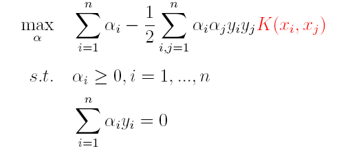
（2）分类函数：
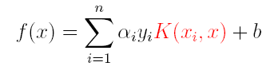
因此，在线性不可分问题中，核函数的选择成了支持向量机的最大变数，若选择了不合适的核函数，则意味着将样本映射到了一个不合适的特征空间，则极可能导致性能不佳。同时，核函数需要满足以下这个必要条件：
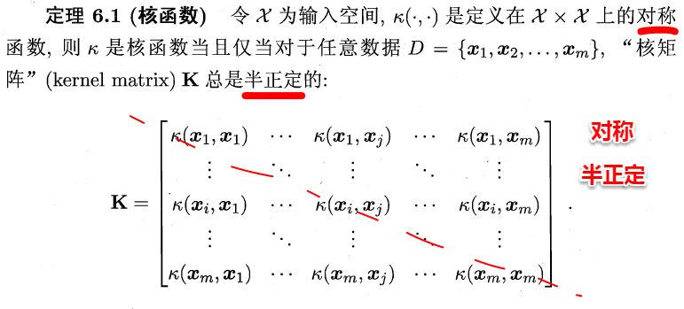
由于核函数的构造十分困难，通常我们都是从一些常用的核函数中选择，下面列出了几种常用的核函数：
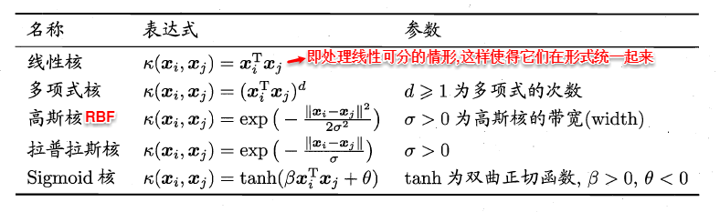
6.5 软间隔支持向量机
前面的讨论中，我们主要解决了两个问题：当数据线性可分时，直接使用最大间隔的超平面划分；当数据线性不可分时，则通过核函数将数据映射到高维特征空间，使之线性可分。然而在现实问题中，对于某些情形还是很难处理，例如数据中有噪声的情形，噪声数据（outlier）本身就偏离了正常位置，但是在前面的SVM模型中，我们要求所有的样本数据都必须满足约束，如果不要这些噪声数据还好，当加入这些outlier后导致划分超平面被挤歪了，如下图所示，对支持向量机的泛化性能造成很大的影响。
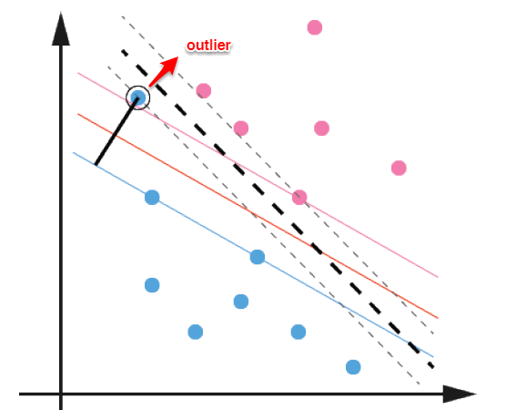
为了解决这一问题，我们需要允许某一些数据点不满足约束，即可以在一定程度上偏移超平面，同时使得不满足约束的数据点尽可能少，这便引出了“软间隔”支持向量机的概念
* 允许某些数据点不满足约束y(w'x+b)≥1；
* 同时又使得不满足约束的样本尽可能少。
这样优化目标变为：
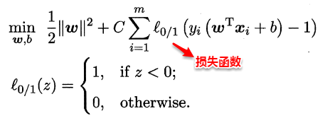
如同阶跃函数，0/1损失函数虽然表示效果最好，但是数学性质不佳。因此常用其它函数作为“替代损失函数”。
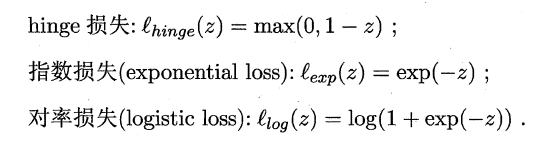
支持向量机中的损失函数为hinge损失，引入“松弛变量”，目标函数与约束条件可以写为：
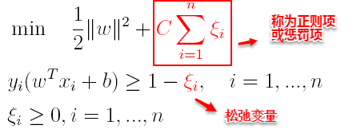
其中C为一个参数，控制着目标函数与新引入正则项之间的权重，这样显然每个样本数据都有一个对应的松弛变量，用以表示该样本不满足约束的程度，将新的目标函数转化为拉格朗日函数得到：
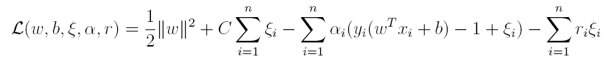
按照与之前相同的方法，先让L求关于w，b以及松弛变量的极小，再使用SMO求出α，有：
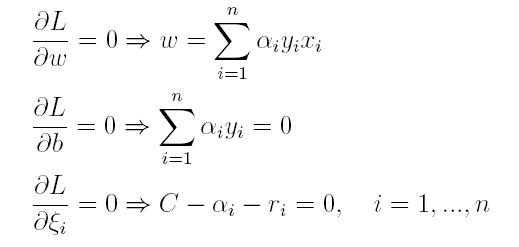
将w代入L化简，便得到其对偶问题：
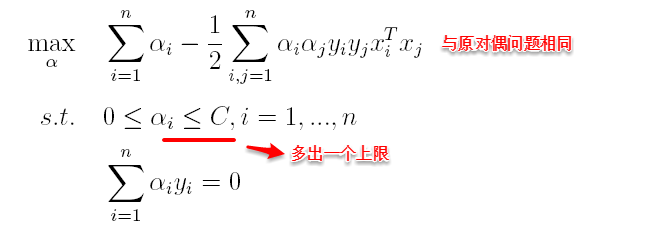
将“软间隔”下产生的对偶问题与原对偶问题对比可以发现：新的对偶问题只是约束条件中的α多出了一个上限C，其它的完全相同，因此在引入核函数处理线性不可分问题时，便能使用与“硬间隔”支持向量机完全相同的方法。